Portal User Guide
August 21, 2023
Quick Start
Start the Portal
Go to the website:
https://wetland.ucalgary.ca/, you will reach the geospatial portal.
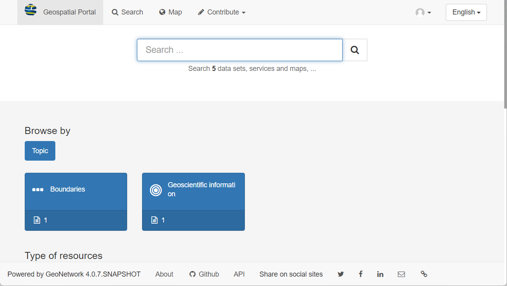
Sign into the Catalog
Click the sign in button located in the top right corner.
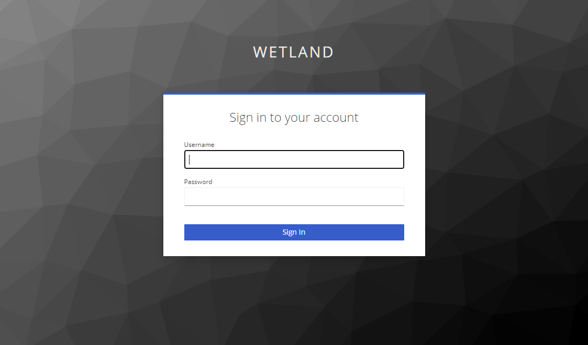
Searching Records
Click the search button in the top left corner, the searching page will show up.
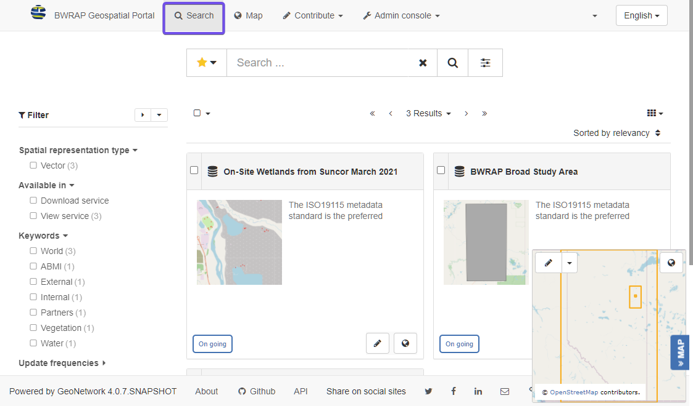
Discovering information
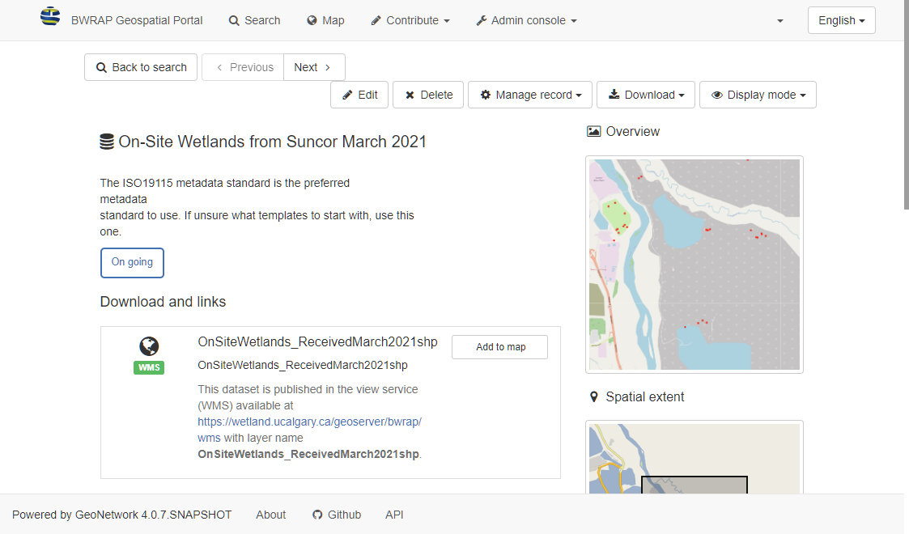
Metadata Management
This is the most used functionalities for geospatial portal. For more detailed instructions please refer to GeoNetwork User Guide
Creating new record
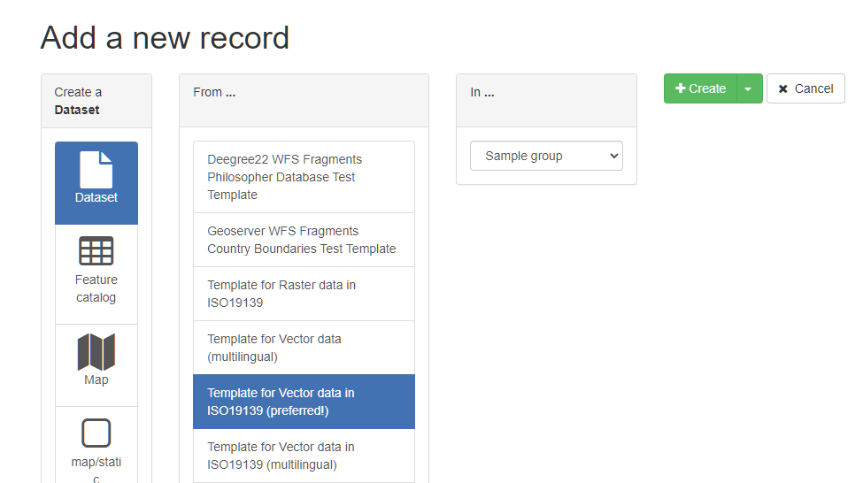
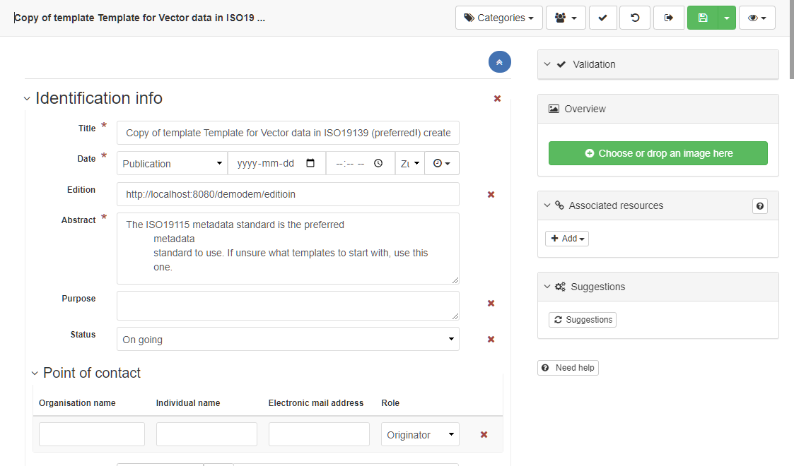
Once finishing inputting all the information of the record, click the save and close button to save the record.
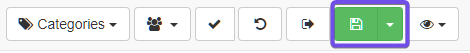
Editing metadata
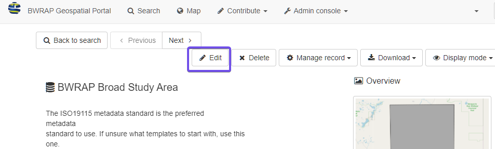
The editing interface will show up. The interface is the same as creating a new record.
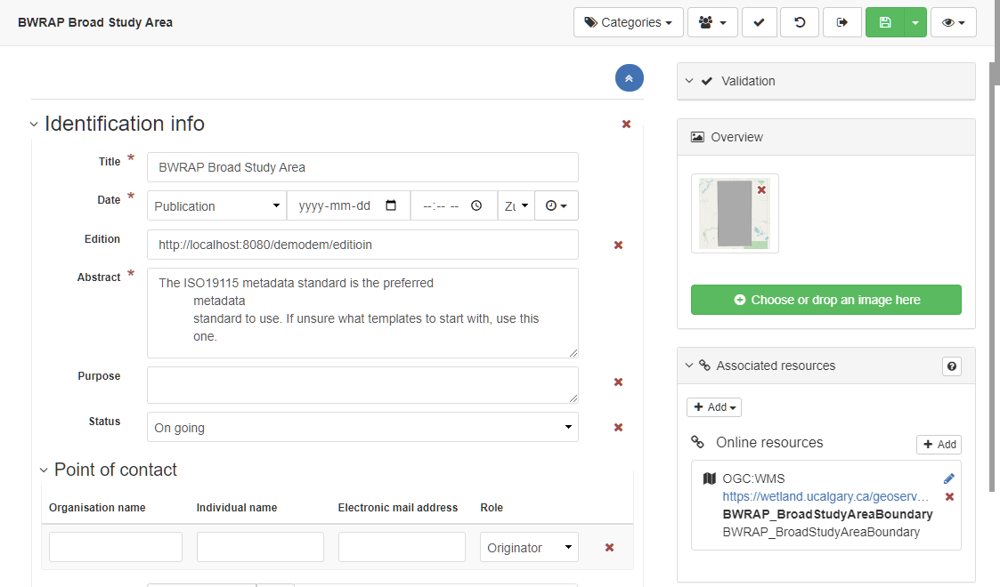
Update the information and save the record.
Associating resources
Adding thumbnail:
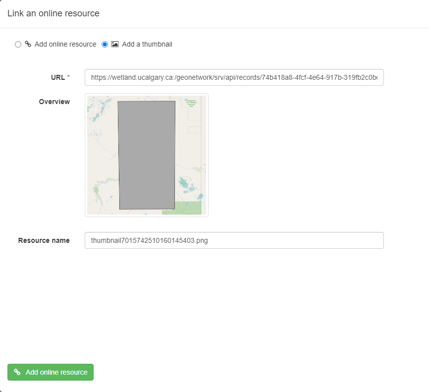
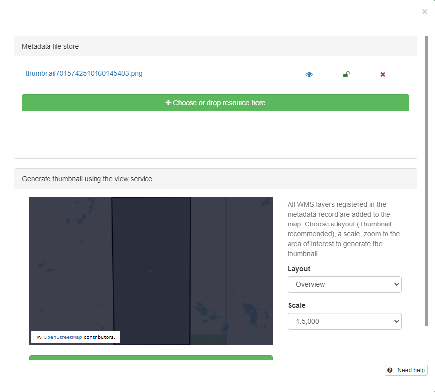
Adding online resources:
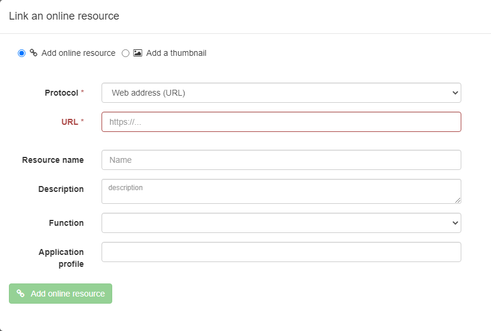
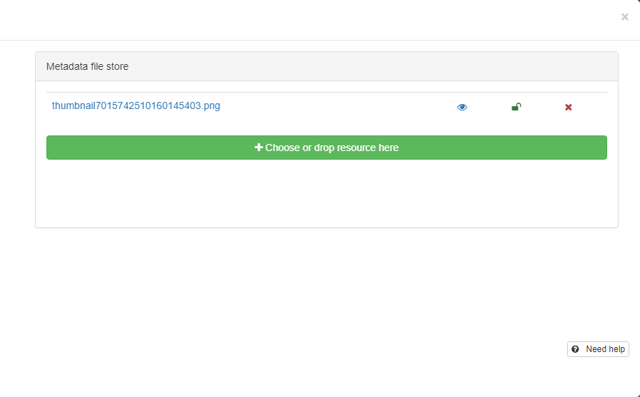
Classify information
Tagging with categories
n the searching page, select the record(s), and click the Selected button,
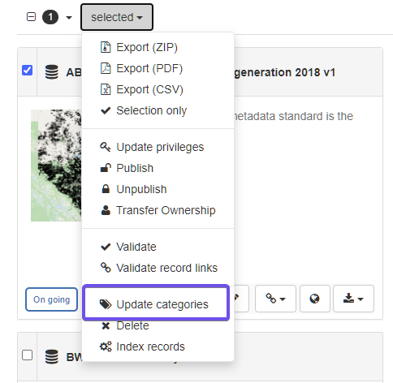
and in the drop down list, click Update categories.
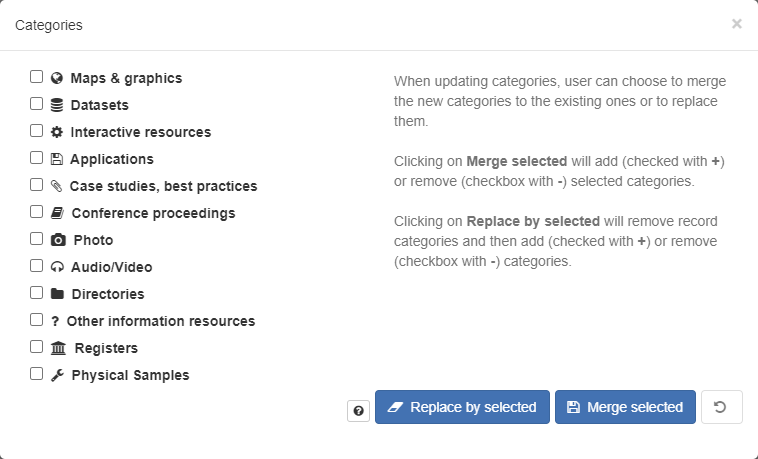
Tagging with keywords
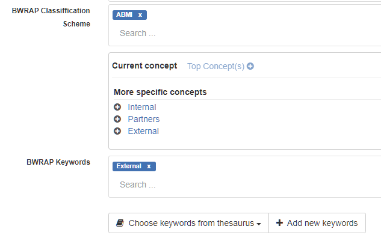
Publishing
Managing privileges
There are 5 privileges for records:
- Publish: Users in the specified group(s) are able to view the metadata eg. if it matches search criteria entered by such a user.
- Download: Users in the specified group(s) are able to download the data.
- Interactive Map: Users in the specified group(s) are able to get an interactive map. The interactive map has to be created separately using a Web Map Server such as GeoServer, which is distributed with GeoNetwork.
- Editing: When randomly selected by GeoNetwork, the metadata record can appear in the Featured section of the GeoNetwork home page.
- Notify: Users in the specified group(s) receive notification if data attached to the metadata record is downloaded.
Setting Privileges
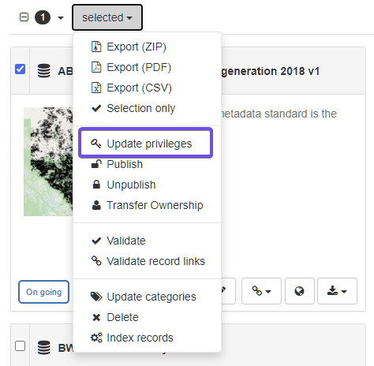
The privileges can also be set through metadata view.
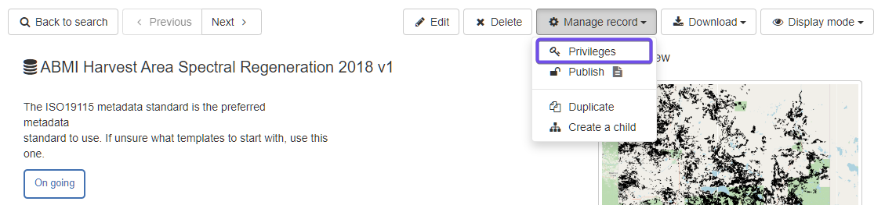
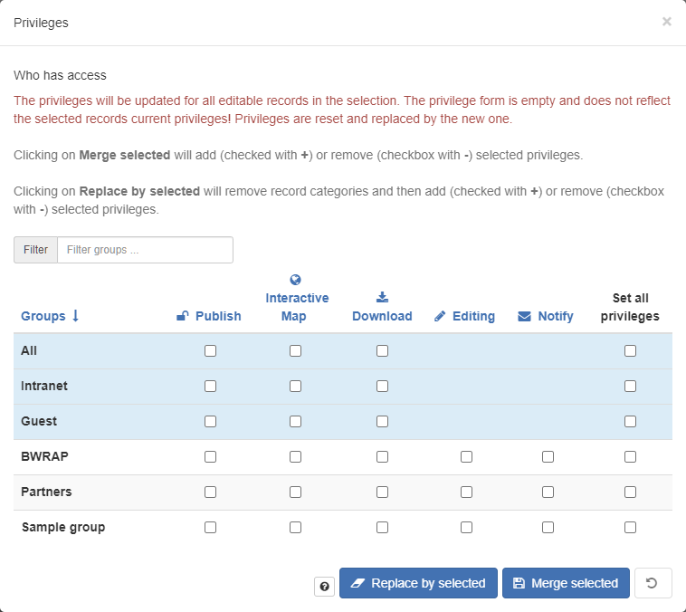
Transferring privileges
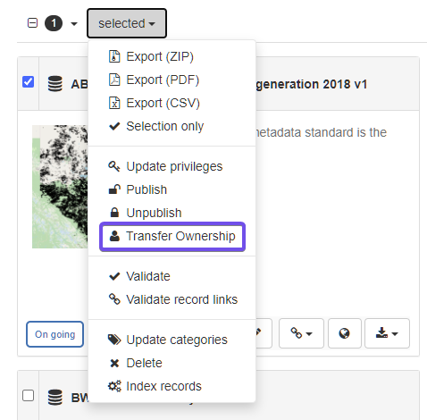
Click the dropdown list, and select the user you want to transfer ownership to.
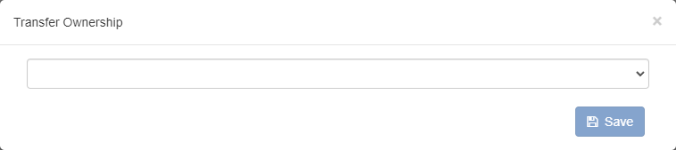
Exporting records
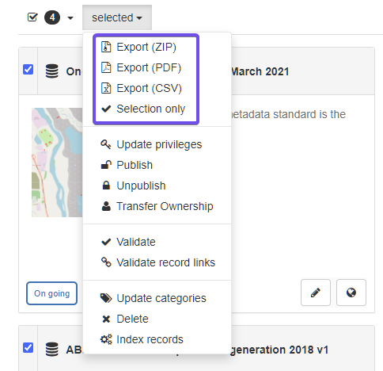
There are three types of exportations:
- Export as a ZIP archive
- Export as a CSV file
- Export as PDF
ZIP archive is recommended for exporting and importing.
References
-
Spatial Data on the Web Best Practices
-
California Open Data Publisher's Handbook
https://docs.data.ca.gov/california-open-data-publishers-handbook/
-
EPA GeoPlatform Data Publishing Workflow Standard Operating Procedure https://19january2017snapshot.epa.gov/sites/production/files/2015-11/documents/epa_datapublishing_workflow_sop_v1.2_20150930_dig_strategy.pdf
-
Prepare data to publish a feature service https://enterprise.arcgis.com/en/server/latest/publish-services/linux/prepare-data-for-feature-services.htm
-
Guidance on submitting geospatial data https://www.canada.ca/en/impact-assessment-agency/services/policy-guidance/practitioners-guide-impact-assessment-act/guidance-submitting-geospatial-data.html